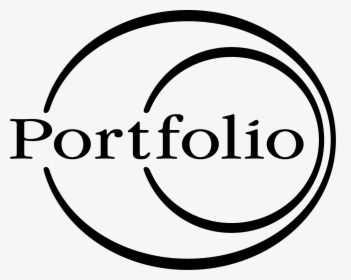

Grâce a quelques photos qu'on nous a envoyées en classe, nous avons réalisé cette affiche sur Photoshop.
En effet pour sa réalisation nous avons:
- Découpage des coureurs : Les coureurs ont été sélectionnés avec l’outil plume, puis copiés et collés sur un nouveau calque. Leurs têtes ont été masquées avec un masque de fusion.
- Remplacement des têtes : Les icônes d’appel, de message et d’appareil photo ont été importées comme des calques séparés et redimensionnées pour s’adapter aux corps des coureurs. Elles ont été positionnées à la place des têtes et alignées avec l’outil alignement.
- Ajout du smartphone : Le smartphone montrant un coureur a été importé comme un autre calque et placé au centre de l’image. Il a été incliné avec l’outil transformation manuelle pour donner un effet de perspective. Le coureur affiché sur l’écran a été découpé et collé de la même manière que les autres coureurs.
- Création du fond : Le fond vert a été créé avec l’outil pot de peinture. Les éléments graphiques blancs ont été dessinés avec l’outil forme. Ils ont été disposés pour former une piste d’athlétisme stylisée.
- Insertion du texte : Le texte a été saisi avec l’outil texte et mis en forme avec les options de police, de taille, de couleur, etc. Il a été réparti en plusieurs zones de texte pour faciliter le positionnement et l’alignement. Il a été placé en bas de l’image pour indiquer les étapes pour télécharger et utiliser l’application.
Grâce a quelques photos qu'on nous a envoyées en classe, nous avons réalisé cette affiche sur Photoshop.
En effet pour sa réalisation nous avons:
- Création du fond étoilé : Un nouveau document avec un fond noir a été créé. Des étoiles ont été ajoutées avec l’outil pinceau ou l’outil dispersion. La couleur du ciel a été modifiée avec l’outil balance des couleurs ou l’outil teinte/saturation pour obtenir un bleu foncé.
- Ajout de la lune : La lune a été découpée à partir d’une image distincte avec l’outil de sélection elliptique ou l’outil plume, puis copiée et collée sur un nouveau calque. Elle a été redimensionnée et positionnée avec l’outil transformation manuelle. Son éclairage a été ajusté avec l’outil courbes ou l’outil niveaux pour créer un effet de demi-lune.
- Ajout des montagnes : Les montagnes ont été découpées à partir d’une autre image avec l’outil de sélection rapide ou l’outil baguette magique, puis copiées et collées sur un nouveau calque. Elles ont été redimensionnées et positionnées avec l’outil transformation manuelle. Leur couleur et leur luminosité ont été modifiées avec l’outil balance des couleurs ou l’outil teinte/saturation et l’outil courbes ou l’outil niveaux pour s’harmoniser avec le fond.
- Ajout du véhicule et de la personne : Le véhicule et la personne ont été découpés à partir d’une autre image avec l’outil de sélection rapide ou l’outil plume, puis copiés et collés sur un nouveau calque. Ils ont été redimensionnés et positionnés avec l’outil transformation manuelle. Leur couleur et leur luminosité ont été modifiées avec l’outil balance des couleurs ou l’outil teinte/saturation et l’outil courbes ou l’outil niveaux pour s’harmoniser avec le fond.
- Ajout de la brume *: La brume a été créée avec l’outil pinceau ou l’outil nuage, en utilisant une couleur blanche ou grise claire et une faible opacité. Elle a été appliquée sur un nouveau calque en mode incrustation ou lumière tamisée. Elle a été floutée avec l’outil flou ou l’outil flou gaussien pour créer un effet de diffusion.
Le logo du ''Sans Limite'' a été vu sur YouTube. Ainsi on a essaie de le reproduire. Pour l’avoir , on a suivi le processus suivant a l'aide de Photoshop :
-Création du logo : Un nouveau document avec un fond blanc a été créé. Un rectangle rouge a été ajouté avec l’outil rectangle et rempli avec l’outil pot de peinture. Le texte “SL” a été inséré avec l’outil texte et mis en blanc. Une bordure blanche a été ajoutée autour du rectangle rouge avec l’option contour. Le texte “TV” a été inséré dans le coin supérieur droit du logo avec l’outil texte et mis en blanc.
-Ajout de la bande : Une bande blanche a été ajoutée sous le logo avec l’outil rectangle et remplie avec l’outil pot de peinture. Le texte “SANS LIMITES” a été inséré avec l’outil texte et mis en rouge. La bande et le texte ont été alignés avec le logo avec l’outil alignement.